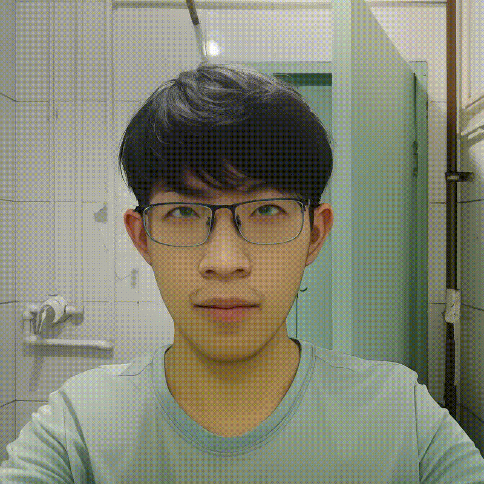
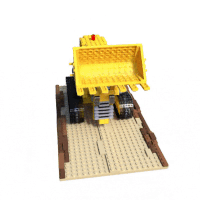
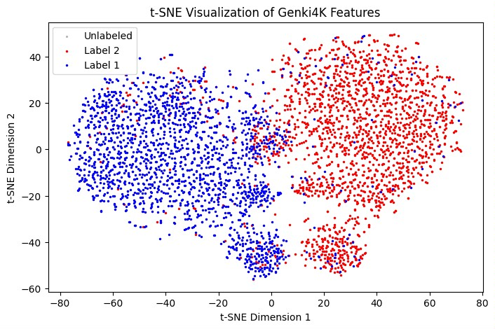

|
Hesong Wang 王鹤淞 I'm currently a fourth-year student at Beijing University of Posts and Telecommunications (Beijing, China), majoring in Telecommunications Engineering. My research interest lies in the field of artificial intelligence, especially in Efficient AI. Now, I'm a visiting student at ENCODE Lab, advised by Huan Wang. |
 |
{kind=link}
Recent News
|
Research Experience |
 |
ENCODE Lab, Westlake University2024.05 ~ Present Visiting Student, supervised by Prof. Huan Wang Conducted research on on-device text-to-image (T2I) diffusion models, focusing on optimizing the performance of neural networks on mobile devices. |
State Key Laboratory of Networking and Switching Technology, BUPT2022.05 ~ 2023.04 Research Intern, supervised by Prof. Wenjia Xu Conducted research on continual learning, particularly focusing on class-incremental learning, to enhance the adaptability of neural networks. |
Projects |
|  |
NeRF Reproduction Under Specific FrameworkProject Owner, 2024.04 Reproduced Neural Radiance Field (NeRF) under the framework "learning_nerf", which is created by the 3DV Group. Reproduce notes is available here. |
|  |
Machine Learning Mini-ProjectProject Owner, 2023.12 Built a complete deep learning pipeline in this project, which contains a supervised learning task and an unsupervised learning task. The project uses the dataset "Genki4k", smile-detection and motion estimation are conducted for supervised learning tasks while clustering is conducted for the unsupervised learning task. |
 |
CS231n: Deep Learning for Computer Vision - Learning NotesProject Owner, 2023.05 ~ 2023.08 My records and notes on learning Stanford CS231n. |